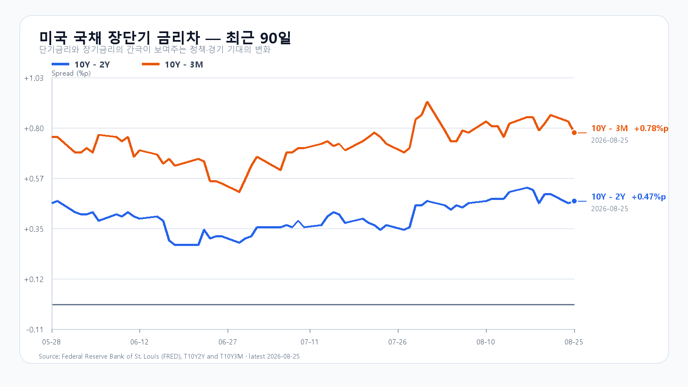

오늘의 한 문장
유가·장기금리 하락과 반도체 반등이 지수 하단을 받치지만, 외국인과 비차익 프로그램 매도가 함께 줄어야 6,900 위를 열 수 있습니다.
저점은 지켰지만 수급은 돌아오지 않았다
KOSPI는 8월 25일 장중 6,408.82까지 밀렸다가 6,742.74로 돌아와 0.68% 상승 마감했습니다. KODEX 레버리지는 1.48% 오른 105,550원이었고 상승 종목 649개가 하락 종목 227개를 웃돌았습니다.
가격 회복과 달리 외국인 현물은 3조8,140억원, 비차익 프로그램은 2조7,337억원 순매도였습니다. 외국인 순매도 하나만으로 약세를 단정하면 장중 저점에서 333.92포인트 되돌린 흐름을 놓칩니다. 오늘은 외국인과 비차익 매도가 함께 줄고 두 메모리 대형주가 오르는지를 한 묶음으로 봐야 합니다.
| 항목 | 확정값 | 오늘 기준 |
|---|---|---|
| KOSPI | 6,742.74(+0.68%) | 6,600 방어 · 6,900 회복 |
| KODEX 레버리지 | 105,550원(+1.48%) | 101,000원 방어 · 105,550원 회복 |
| 외국인·비차익 | -3조8,140억 · -2조7,337억원 | 동반 매도 축소 여부 |
| 삼성전자·SK하이닉스 NXT | 259,500원(+0.97%) · 1,698,000원(+1.19%) | 장전 상승폭 유지 여부 |
반도체를 들어 올린 것은 금리와 유가였다
미국 정규장에서 QQQ는 0.62%, TQQQ는 1.83%, SOXX는 1.56%, SMH는 1.65% 올랐습니다. Nvidia +2.19%, AMD +4.91%, Micron +2.48%로 전날 급락을 일부 되돌렸고 Broadcom은 0.56% 내렸습니다. 시간외 움직임은 정규장 종가 대비 +0.04%~+0.53%에 그쳤습니다.
Brent가 3.6% 내린 87.27달러로 내려오고 미국 10년물도 4.64%로 낮아지면서 주식의 할인율 부담이 줄었습니다. 미국 7월 신규주택판매는 연율 60만7천호로 전월보다 10.5% 줄었고, 8월 소비자신뢰는 89.4로 7개월 최저였습니다. 약한 수요가 금리를 눌렀다는 점에서 이번 반등을 강한 성장 신호로 확대해석할 수는 없습니다.
메모리 현물은 한 방향으로 움직이지 않았다
TrendForce의 8월 25일 공개치에서 DDR5 16Gb 현물 평균은 54.167달러로 보합이었습니다. DDR4 16Gb는 0.83% 내린 90.561달러, DDR4 8Gb는 0.21% 오른 43.377달러였습니다. 미국 반도체와 NXT 반등은 우호적이지만 메모리 가격까지 일제히 강해진 날은 아닙니다.
미국 3개월물 3.86%, 2년물 4.17%, 10년물 4.64%, 30년물 5.17%였습니다. 10Y-2Y는 +0.47%p, 10Y-3M은 +0.78%p입니다. 장기금리 하락은 반도체 밸류에이션에 우호적이지만 오늘 밤 PCE가 예상보다 높으면 되돌림이 나올 수 있습니다.

오늘의 시나리오
KOSPI 6,600~6,900
미국 반도체와 NXT 상승, 낮아진 유가·금리가 하단을 받칩니다. 외국인·비차익 매도가 전날보다 줄고 6,600을 지키면 6,742.74와 6,900을 차례로 시험합니다.
KOSPI 6,900~7,150
삼성전자·SK하이닉스가 장전 상승폭을 지키고 외국인 현물과 비차익 프로그램이 함께 개선됩니다. 6,900 위에 안착해야 7,000과 7,150을 열 수 있습니다.
KOSPI 6,300~6,600
NXT 상승이 정규장에서 소멸하고 외국인·프로그램 매도가 다시 커집니다. 6,600을 회복하지 못하면 전날 저점 6,408.82와 6,300을 차례로 시험할 수 있습니다.
2차 지지 94,430원 · 1차 지지 101,000원 · 반등 기준 105,550원 · 저항 110,000원.
전체 장중 경로는 KOSPI 6,250~7,200으로 봅니다. 오늘 대응 점수는 공격 25 · 관망 55 · 방어 20입니다.
오늘 밤 GDP·PCE, 내일 새벽 Nvidia
미국 2분기 GDP 2차 추정과 7월 개인소득·지출·PCE, 내구재 주문이 오늘 오후 9시 30분에 함께 나옵니다. 2분기 GDP 속보치는 연율 1.5%였고 7월 근원 PCE 전년 대비 시장 예상은 약 3.3%입니다. Nvidia는 27일 오전 5시 20분에 실적을 공개하고 오전 6시에 컨퍼런스콜을 엽니다.
두 이벤트 모두 오늘 한국장 마감 뒤입니다. 장중에는 KOSPI 6,600선, 외국인 현물과 비차익 프로그램의 동반 개선, 삼성전자·SK하이닉스의 장전 상승폭 유지가 더 직접적인 확인값입니다.